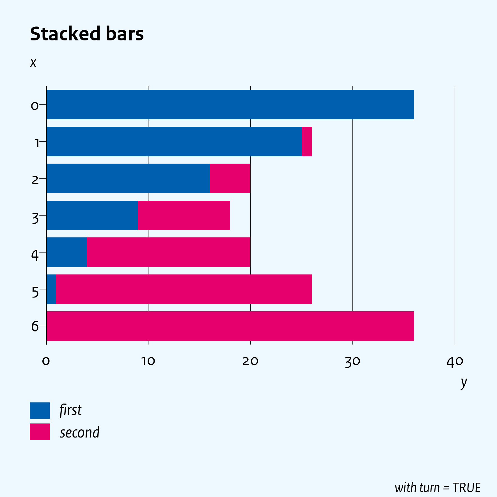
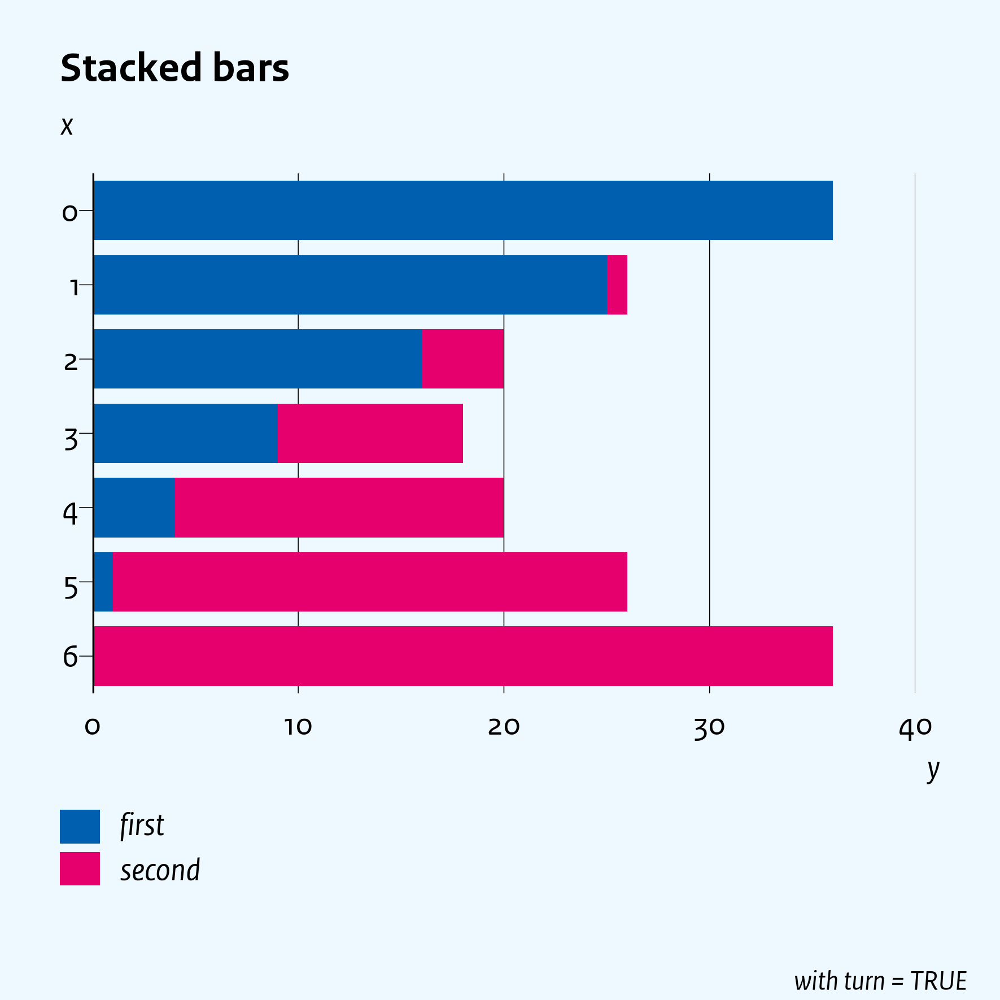

Time series data visualisation made easy for Excel users and R programmers.
Installation
- Download RStudio or R.
- Open RStudio or R, and install the package
devtools:R install.packages("devtools", repos = "http://cran.us.r-project.org") - With the
devtoolspackage you can installnicerplotdirectly from github:R devtools::install_github("data-science-made-easy/nicerplot")
Congratulations, you now have the cutting-edge development version of nicerplot!
Hello World example
Step 1: define a so-called data-frame (other data types, e.g., matrix, are fine as well):
x <- 0:6
my_data <- data.frame(x, first = (6 - x)^2, second = x^2)Step 2: plot the data given some parameters:
library(nicerplot)
plot(my_data, title = 'Hello World', x_title = 'x', y_title = 'y', footnote = "just an example")Step 2 produces a figure in./generated/hello-world.png in your workingdirectory (see: getwd()), which looks like this:

Change the layout
Instead of lines you can plot ‘stacked bars’ by using parameter type = 'bar=' (use type = 'bar-- for shoulderd bars):
plot(my_data, title = 'Shouldered bars', x_title = 'x', y_title = 'y', type = 'bar--', file = 'Hello-World-shouldered-bars')
plot(my_data, title = 'Stacked bars', x_title = 'x', y_title = 'y', footnote = 'with turn = TRUE', type = 'bar=', file = 'Hello-World-stacked-bars', turn = TRUE) 

More examples
The official manual provides many other examples. Below each figure in this manual you can find the R-code to reproduce that figure. Please ignore the file paths in the manual.